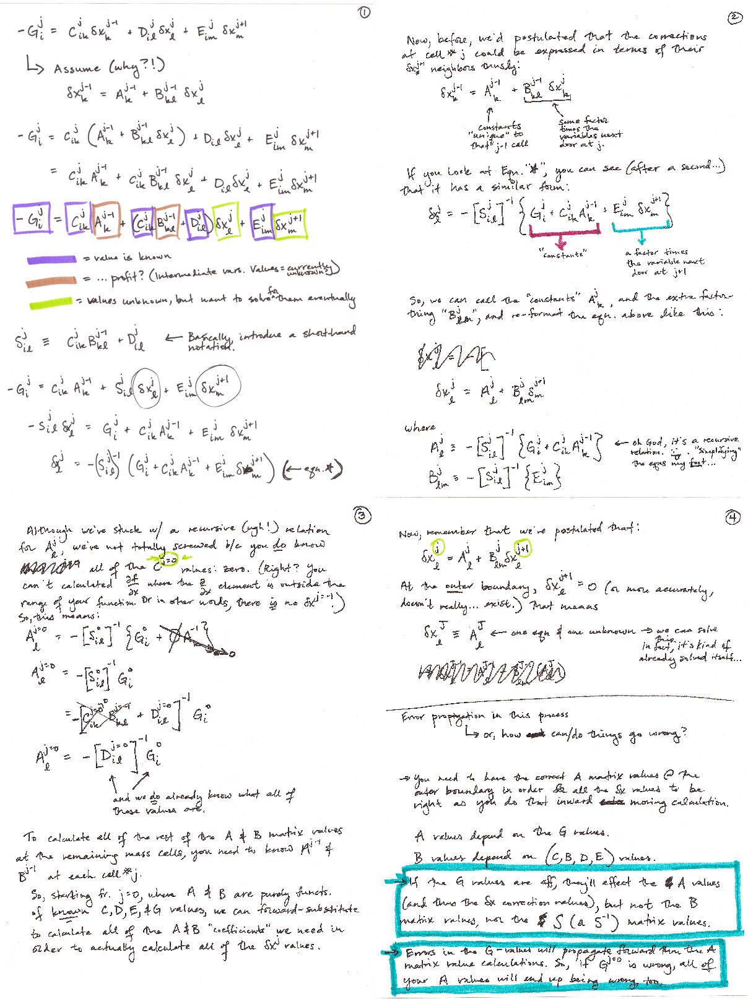
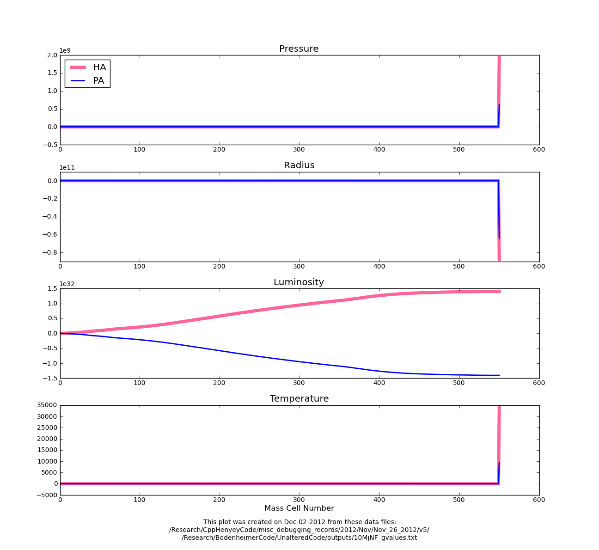
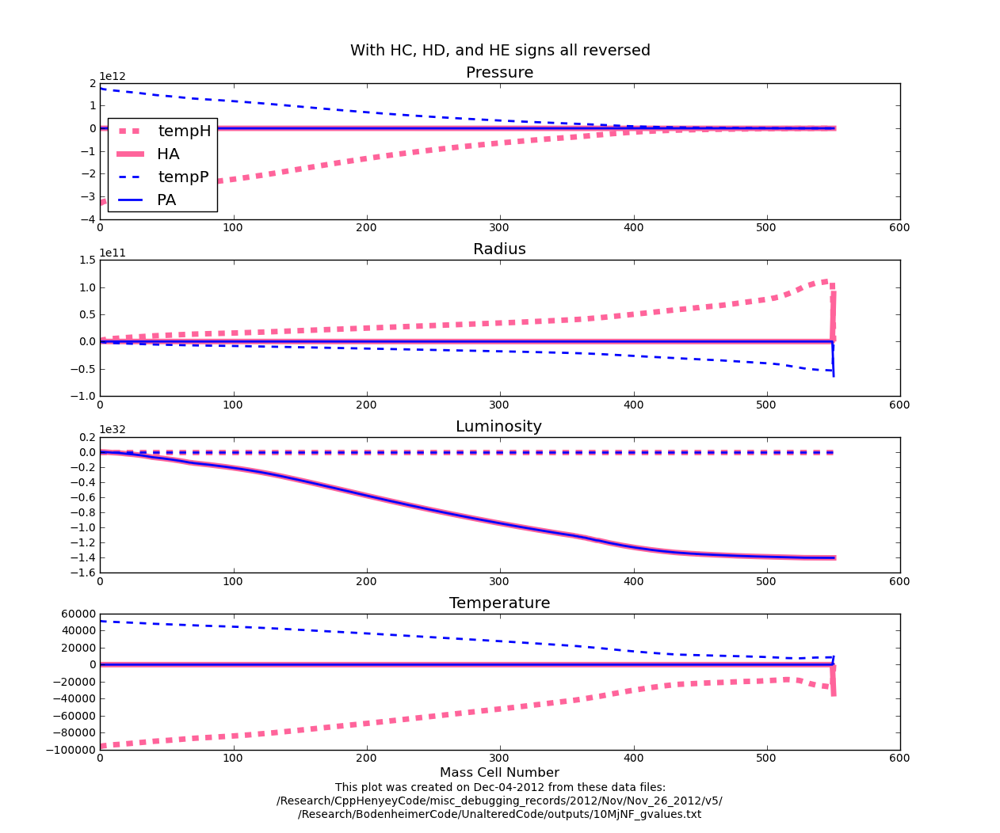

Figure
1:
Plots of the two components that go into determining the dX values.
Note: dX = temp + A
Date & Time: Dec. 4, 2012
Location: Campus
Computing context: /Desktop/Research/CppHenyeyCode, /Desktop/Research/BodenheimerCode/UnalteredCode/
From last time:
A sign error is entering thru the A matrices, which themselves depend on the S and Sum matrices. I've been trying to figure out where, exactly, the sign error is getting into those , w/ limited success. Figure 4 shows my scheme for tracking how sign differences propagate thru the code.
***For all variables BESIDES the luminosity, the bolded values are so much larger than the italicized ones that differences b/w the codes HA values don't really register in the results:
HdX[j] = dot(HB[j],HdX[j+1]) + HA[j]***
Trying to figure out where those errors/sign differences in the HA matrices are coming from, and how to eradicate them.
--> Start by drawing out what's going on with the whole matrix-solution/backsolving algorithm.
Done. See the scanned in "Henyey Backsolving Manifesto" notes below. [Note to self: upload the pdf of the notes to the blog's Manifesto section when you upload your entries...]

The take-home point from this exercise is that the G values are crucially important to the success of the entire dX calculation.
So, what's going on with the G-matrix values in Helena:
What happens if I calculated the corrections using Peter's G values, but Helena's CDE values? Does that produce the correct dX profiles? <--Answer: not quite the silver bullet I'm looking for.
What if I replace Helena's G[0] values w/ Peter's G[0] values? What effect does that have? <--Answer: this is not the silver bullet, either.
Here's what's going on with the dX calculations (Figure 1):
Plots of the two
components that go into determining the dX values.
Note: dX = temp + A
Figure
1:
In Figure 1, above, the plotted quantities are defined as follows:


For the luminosity values, the temp values are (close enough to) zero, and the A values matter. For all the other variables, though, the A values don't really matter, and it's the temp values that determine the result.
Question: are the A values for all the variables of opposite signs, as they are for the luminosity? Or is that only a luminosity thing? (And if so, WHY???)
--> Answer (see Figure 2): it's only a luminosity thing.

Comparison of just the
A values
Figure
2:
For today:
For reference, here's how the temp and A values change if you ONLY set HG[2] = -1.0*HG[2] (Figure 3):
When I change the sign
on Helena's G[2] (luminosity) values, it doesn't get all of the dX
profiles to line up. Rather, it just switches which profiles' signs
match and which don't. So, it's not an issue limited to the G
values. Therefore, I guess it has to be an issue w/ the signs in
Helena's CDE values? Which would kind of make sense if the G[2]
values are the wrong sign, since the CDE values are just derivatives
of the G values.

Figure
3:
Why are only the luminosity A values inverted? (Again, remember: setting G[2] = -1.0*G[2] does NOT fix the problem.)
Does this have something to do w/ needing to change the sign on the Helena CDE values?
Answer: not totally. Figure 4 shows what happens when I reverse the signs on the Helena CDE values (but not the G values). Now, instead of the dX sign reversals seen in Figures 2 and 3, you get dX profiles that are not only of opposite signs, but also of different magnitudes. So, in short, it makes the problem worse. However, it may be an issue of just changing the signs of selected rows or columns of Helena's CDE matrices (perhaps the ones that depend on the luminosity?)

Figure
4
If I correct the outer HA values (set them equal to their Peter counterparts), then I get the correct dX profiles. So, need to look into getting those outer CDEG values to agree b/w the two codes.
However, I think they are closer to agreeing w/ each other than they were before I did all that atmos debugging, so that's encouraging.
Also, as it is now, I think both codes produce dX profiles of the same signs, so even if I can't get them to agree perfectly w/ each other, they should still have the same net effect on the model they're trying to converge. In other words: it may not be a federal case if I can't figure this bit of the problem out.